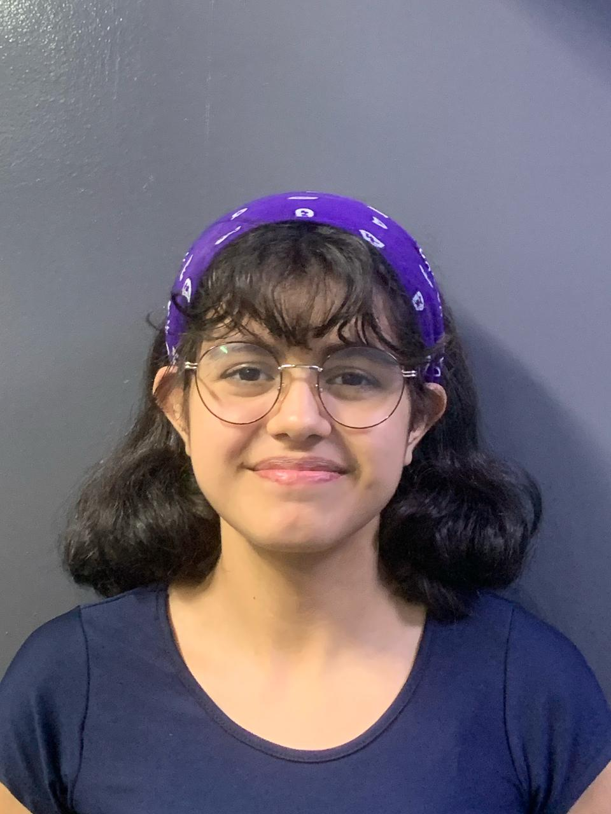

A solução ideal para garantir a segurança dos seus medicamentos. Nossos sensores rastreiam temperatura em tempo real, durante todo o transporte.
 Inovação
Inovação Tecnologia de ponta para rastreamento eficiente.
Dados detalhados e alertas em tempo real.
Plataforma intuitiva para monitoramento.
A Biologistic foi criada para garantir o transporte seguro de medicamentos termossensíveis. Nossos sensores monitoram temperatura em tempo real, alertando qualquer variação que possa comprometer a qualidade dos produtos. Com tecnologia avançada e uma plataforma intuitiva, ajudamos laboratórios, clínicas e hospitais a reduzir perdas e otimizar processos logísticos, garantindo que os medicamentos cheguem ao destino em perfeitas condições.
Nossos sensores capturam dados essenciais durante todo o transporte. A qualquer variação fora do padrão, alertamos imediatamente via nossa plataforma, garantindo total controle e segurança.
Isabelly Crisine
Designer
Willian Batista
Adm de Banco de dados
Natália Lopes
Arquiteta Computacional
Marilia Toscano
Back-end
Laura Belinello
T.I.